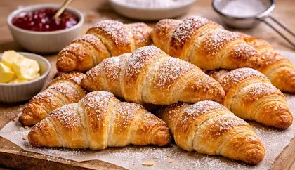

O segredo do croissant está na massa, que deve ser semifolhada. Em portugal, algumas das croissanterias mais famosas sao "O melhor croissant da minha rua","O meu croissant", " Croissanteria tradicional" e "Pastelaria O Careca"
Os mehores croissants recheados na minha opinião
- Croissant com chocolate
- Croissant com nuttela
- croissant com chocolate branco
- croissant com ferrero rocher
- Croissant com queijo
- Croissant com manteiga
- Croissant misto
Tipos de massa de croisant
- Massa folhada
- Massa brioche
Receita de croissants!

Mais informação sobre croissants.